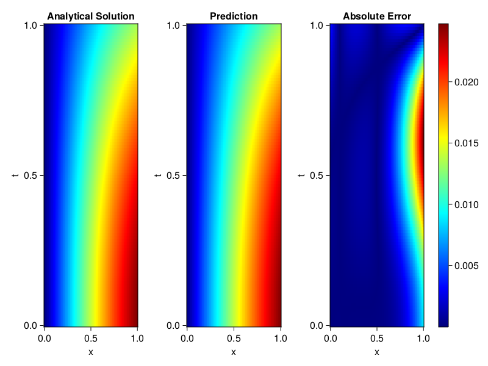
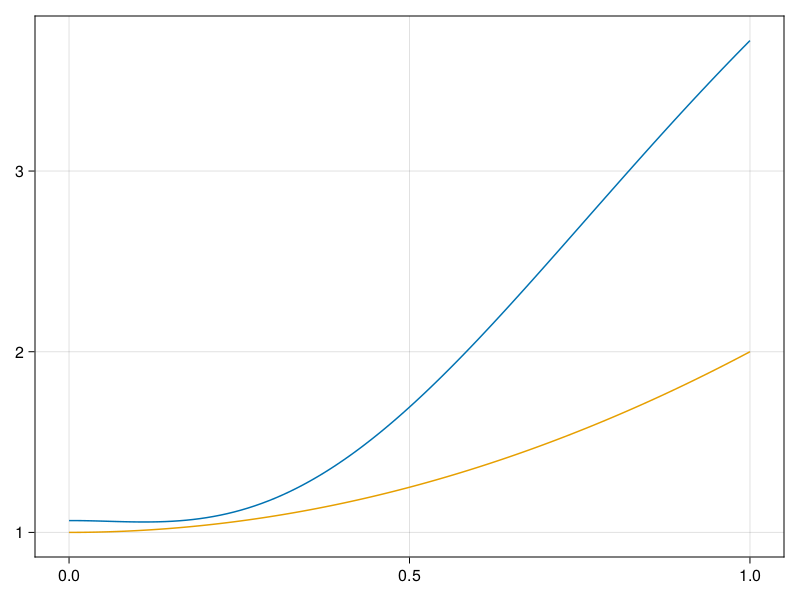

Inverse problem for the wave equation with unknown velocity field
We are going to sovle the wave equation.
using Sophon, ModelingToolkit, IntervalSets
using Optimization, OptimizationOptimJL
@parameters x, t
@variables u(..), c(..)
Dₜ = Differential(t)
Dₜ² = Differential(t)^2
Dₓ² = Differential(x)^2
s(x,t) = abs2(x) * sin(x) * cos(t)
eq = Dₜ²(u(x,t)) ~ c(x) * Dₓ²(u(x,t)) + s(x,t)
bcs = [u(x, 0) ~ sin(x),
Dₜ(u(x, 0)) ~ 0,
u(0, t) ~ 0,
u(1, t) ~ sin(1) * cos(t)]
domains = [t ∈ Interval(0.0, 1.0),
x ∈ Interval(0.0, 1.0)]
@named wave = PDESystem(eq, bcs, domains, [t,x], [u(x,t),c(x)])\[ \begin{align} \frac{\mathrm{d}}{\mathrm{d}t} \frac{\mathrm{d}}{\mathrm{d}t} u\left( x, t \right) =& c\left( x \right) \frac{\mathrm{d}}{\mathrm{d}x} \frac{\mathrm{d}}{\mathrm{d}x} u\left( x, t \right) + \cos\left( t \right) \left|x\right|^{2} \sin\left( x \right) \end{align} \]
Here the velocity field $c(x)$ is unknown, we will approximate it with a neural network.
pinn = PINN(u = FullyConnected((2,16,16,16,1), sin),
c = FullyConnected((1,16,16,1), tanh))
sampler = QuasiRandomSampler(500,100)
strategy = NonAdaptiveTraining(1, (10,10,1,1))NonAdaptiveTraining{Int64, NTuple{4, Int64}}(1, (10, 10, 1, 1))Next we generate some data of $u(x,t)$. Here we place two sensors at $x=0.1$ and $x=0.5$.
ū(x,t) = sin(x) * cos(t)
x_data = hcat(fill(0.1, 1, 50), fill(0.5, 1, 50))
t_data = repeat(range(0.0, 1.0, length = 50),2)'
input_data = [x_data; t_data]
u_data = ū.(x_data, t_data)1×100 Matrix{Float64}:
0.0998334 0.0998126 0.0997503 0.0996464 … 0.275281 0.267213 0.259035Finally we construct the inverse problem and solve it.
additional_loss(phi, θ) = sum(abs2, phi.u(input_data, θ.u) .- u_data)
prob = Sophon.discretize(wave, pinn, sampler, strategy; additional_loss=additional_loss)
@time res = Optimization.solve(prob, BFGS(), maxiters=1000)u: ComponentVector{Float64}(u = (layer_1 = (weight = [1.065179616456327 -0.5420536791193705; 1.2026712108499813 -0.9161353785321695; … ; -0.4197559245119692 -0.1345630971237196; -0.6571960034333153 -1.1425455899076182], bias = [0.06392849554888147; -0.0866175048881505; … ; -0.14742231994133487; -0.04155395137811115;;]), layer_2 = (weight = [-0.007390730476491291 0.06669453640000997 … -0.5510724676640736 -0.3104221840144781; -0.2586952980008147 -0.32167863489602866 … -0.24346632997691645 0.3651635144420112; … ; 0.001962359707422813 0.49816712597352014 … 0.30038838916868343 -0.22183993529015875; -0.046889095499625943 -0.585601069898435 … -0.43787047911791466 0.05163976821737861], bias = [0.22290585944812444; 0.024888488800093717; … ; -0.047063077100974265; -0.14422573554031828;;]), layer_3 = (weight = [0.12952249017625808 -0.38809568680321266 … 0.43190646970770624 -0.5000414031110304; -0.7070480926874353 -0.42587421020144045 … -0.14462301398295824 -0.5183117738113515; … ; 0.1833561957007192 0.7143737668118865 … 0.6586455268689095 0.3090968347533904; -0.006132209918303545 -0.4004375094677281 … -0.3305915164069127 -0.2997363308504192], bias = [-0.05644006649924794; 0.15029843097480577; … ; 0.05258620166275476; -0.13568509575259693;;]), layer_4 = (weight = [-0.4114905702491803 0.41786822950874075 … -0.2267843160594093 0.061257561794728896], bias = [-0.12895504051247159;;])), c = (layer_1 = (weight = [0.40274337575588615; -0.33377543864980846; … ; 0.26729377096733253; 0.5859228658896505;;], bias = [0.04298035373773975; -0.24353209408249413; … ; 0.17764112758836934; 0.1549260215220719;;]), layer_2 = (weight = [-0.471547242137208 0.36792941311034894 … -0.46868765618408953 0.17136334732772018; -0.18959609981782785 -0.15417662133286056 … 0.4405466567412666 0.3875734431298433; … ; -0.14882005294978407 -0.3088567299936802 … 0.10809668758953471 -0.5069362507363161; 0.1801429520116966 -0.019029216406717658 … -0.6096693178499231 -0.40923294384241443], bias = [0.3024977531413616; 0.040440250408014314; … ; 0.051063235206169566; -0.11828684900223041;;]), layer_3 = (weight = [0.5057684125648759 0.558764856731704 … -0.9168908008810408 -1.5423126379062604], bias = [0.2730026396714639;;])))Let's visualize the predictted solution and inferred velocity
using CairoMakie
ts = range(0, 1; length=100)
xs = range(0, 1; length=100)
u_pred = [pinn.phi.u([x, t], res.u.u)[1] for x in xs, t in ts]
c_pred = [pinn.phi.c([x], res.u.c)[1] for x in xs]
u_true = [ū(x, t) for x in xs, t in ts]
c_true = 1 .+ abs2.(xs) |> vec
axis = (xlabel="x", ylabel="t", title="Analytical Solution")
fig, ax1, hm1 = heatmap(xs, ts, u_true, axis=axis; colormap=:jet)
ax2, hm2= heatmap(fig[1, end+1], xs, ts, u_pred, axis= merge(axis, (;title = "Prediction")); colormap=:jet)
ax3, hm3 = heatmap(fig[1, end+1], xs, ts, abs.(u_true .- u_pred), axis= merge(axis, (;title = "Absolute Error")); colormap=:jet)
Colorbar(fig[:, end+1], hm3)
fig
fig, ax = lines(xs, c_pred)
lines!(ax, xs, c_true)
fig